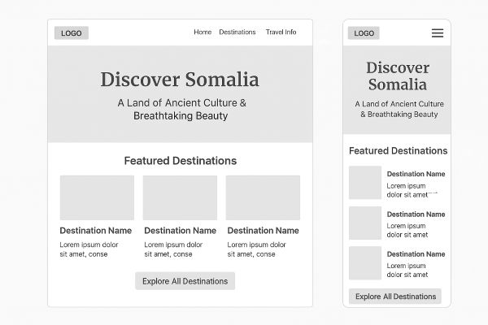

1. Site Name
Discover Somalia — This name was chosen to highlight Somalia’s unique beauty and attractions, inviting visitors to explore its culture, beaches, and heritage.
2. Site Purpose
The purpose of this site is to provide tourists with reliable information about Somalia, including top destinations, cultural highlights, safety tips, and local travel guidance. It will serve as a welcoming resource to promote tourism in Somalia.
3. Scenarios
- Where can I find the best beaches to visit in Somalia?
- What historical and cultural sites should I explore during a short trip to Mogadishu?
4. Color Schema
Primary Color: Ocean Blue (#0077b6) – used for headers, navigation, and accents.
Secondary Color: Sand (#f4a261) – used for headings and highlights, representing the Somali desert landscapes.
5. Typography
Headings: Merriweather, serif (elegant and bold for titles).
Body Text: Roboto, sans-serif (clean and easy to read for content).
6. Wireframe
Below are wireframes for the home page in mobile and desktop views:
Desktop View (1024px) and Mobile View (320px)
